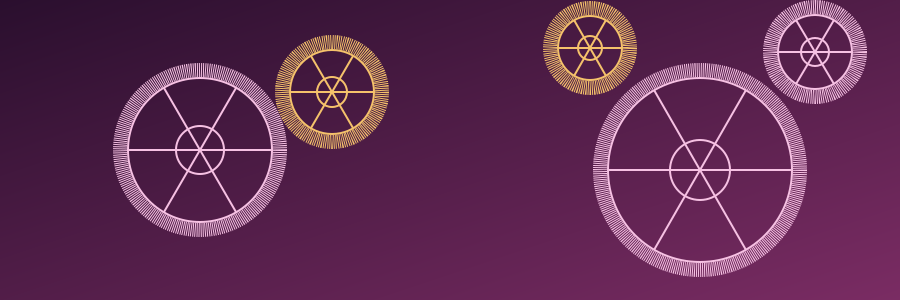
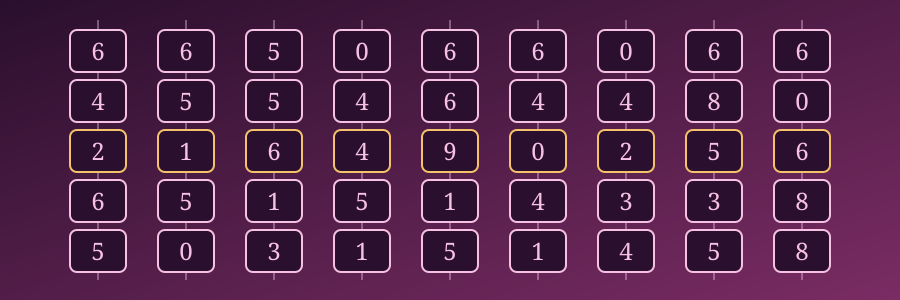
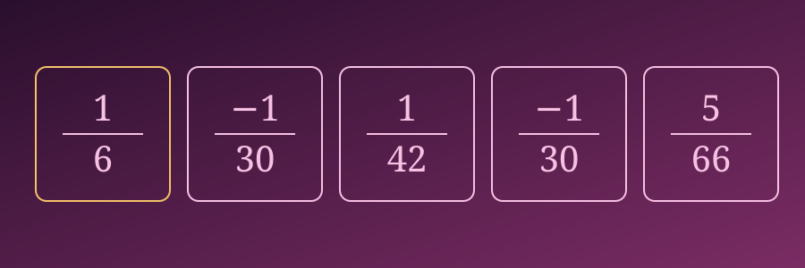

Ada Lovelace
Matemática e pioneira da programação.
Augusta Ada King, Condessa de Lovelace, foi uma matemática britânica conhecida por seu trabalho relacionado à Máquina Analítica, projeto idealizado pelo matemático e inventor Charles Babbage. Suas anotações sobre o funcionamento dessa máquina são hoje reconhecidas como um marco importante na história das ideias que antecederam a computação moderna, por descreverem, de forma detalhada, como a máquina poderia seguir uma sequência de instruções para realizar operações.

Infância e família
Ada nasceu em uma família de destaque na sociedade britânica do início do século XIX. Sua mãe, preocupada com o temperamento do pai de Ada, incentivou desde cedo uma educação voltada para a lógica e a matemática, buscando cultivar na filha um raciocínio disciplinado e racional.
Esse ambiente familiar, incomum para meninas da época, foi determinante para que Ada desenvolvesse, ainda jovem, um interesse profundo por ciências exatas, em um período no qual o acesso de mulheres à educação formal em matemática era bastante restrito.
Educação
Ada recebeu instrução particular em matemática, contando com tutores que reconheceram e estimularam seu talento incomum para a área. Essa formação, construída fora do sistema educacional tradicional disponível às mulheres da época, permitiu que ela alcançasse um nível de conhecimento matemático avançado.
Ao longo da vida, manteve contato com matemáticos e cientistas de destaque, o que contribuiu para aprofundar ainda mais sua compreensão sobre temas complexos da matemática de seu tempo.
Charles Babbage
Ada conheceu Charles Babbage, matemático e inventor responsável por projetar máquinas de cálculo mecânicas, em um encontro social. A partir dessa relação, os dois desenvolveram uma colaboração intelectual duradoura, na qual Ada demonstrou grande interesse pelos projetos de Babbage e pela lógica envolvida em seu funcionamento.
Essa colaboração se tornaria um dos episódios mais importantes da carreira de Ada, pois foi a partir do trabalho conjunto com Babbage que ela desenvolveu suas contribuições mais conhecidas.

Máquina Analítica
A Máquina Analítica foi um projeto idealizado por Babbage para uma máquina de calcular mecânica capaz de realizar operações matemáticas seguindo uma sequência programável de instruções, algo inovador para a época. Diferente de calculadoras simples, ela foi concebida para poder executar diferentes tipos de operações a partir de instruções fornecidas por meio de cartões perfurados.
A Máquina Analítica nunca chegou a ser construída por completo durante a vida de Babbage, mas seu projeto teórico já reunia elementos que, mais tarde, seriam reconhecidos como característicos de um computador programável.
O projeto representava uma mudança conceitual importante: a ideia de que uma máquina poderia ser instruída a realizar diferentes tarefas, e não apenas uma única função fixa, é considerada por historiadores da computação um passo relevante rumo à ideia moderna de programação.
O primeiro algoritmo
Ao traduzir e ampliar um artigo sobre a Máquina Analítica, Ada acrescentou notas extensas e detalhadas, entre 1842 e 1843, que se tornaram mais longas do que o texto original. Nessas notas, ela descreveu, com grande precisão, uma sequência de instruções que a máquina poderia seguir para calcular os números de Bernoulli.
Essa descrição é amplamente citada como um dos primeiros exemplos registrados de um algoritmo destinado a ser executado por uma máquina, o que confere a Ada um papel de destaque na história inicial da programação.
É importante compreender esse trabalho dentro de seu contexto histórico: a máquina descrita nunca foi construída por completo, e o próprio conceito de "programação" ainda não existia formalmente na época. Ainda assim, o raciocínio estruturado presente nas notas de Ada é reconhecido por historiadores como uma contribuição conceitual pioneira e significativa.

Matemática
Ao longo de sua vida, Ada manteve um interesse constante pela matemática, aprofundando-se em temas como álgebra e lógica. Ela via na matemática não apenas uma ferramenta de cálculo, mas também uma linguagem capaz de representar processos e relações de forma precisa — visão que se refletiu diretamente em sua análise sobre a Máquina Analítica.
Essa forma de pensar, que unia rigor matemático a uma visão mais ampla sobre o potencial das máquinas de calcular, é um dos aspectos mais destacados de sua obra.
Legado
O legado de Ada Lovelace é reconhecido em diferentes áreas:
História da computação: suas notas sobre a Máquina Analítica são um dos primeiros registros detalhados sobre a ideia de instruir uma máquina a executar sequências de operações.
Programação: a descrição do cálculo dos números de Bernoulli é frequentemente citada como um exemplo pioneiro de algoritmo voltado à execução por máquina.
Matemática: sua formação e produção intelectual demonstram um domínio incomum da matemática para uma mulher em seu contexto histórico.
Participação feminina na ciência: sua trajetória é hoje lembrada como um símbolo importante da presença feminina na história da ciência e da tecnologia, em um período no qual essa participação era pouco reconhecida.
Linha do tempo
1815
Nascimento
1833
Conhece Charles Babbage
1842–1843
Tradução e ampliação das notas sobre a Máquina Analítica
1843
Publicação das notas
1852
Falecimento
Conexão histórica
Décadas antes de Alan Turing estabelecer os fundamentos teóricos da computação moderna, Ada Lovelace já havia refletido sobre a possibilidade de uma máquina seguir uma sequência de instruções para realizar operações. Embora seus contextos históricos fossem muito diferentes, ambos ocupam lugares importantes na história das ideias que ajudaram a formar a computação.
Conheça Alan TuringReferências
- Science Museum Acervo e recursos sobre a história da computação, Ada Lovelace e Charles Babbage.
- Encyclopaedia Britannica Biografia e contexto histórico sobre Ada Lovelace e sua contribuição para a computação.
- Computer History Museum Materiais sobre a história inicial da computação e o desenvolvimento das máquinas de cálculo.
- Bodleian Libraries — University of Oxford Arquivos e documentos históricos relacionados a Ada Lovelace e à história da ciência.
- Ada Lovelace: The Making of a Computer Scientist Livro de Christopher Hollings, Ursula Martin e Adrian Rice sobre a formação matemática de Ada Lovelace e seu trabalho com a Máquina Analítica.
- Sketch of the Analytical Engine — Luigi Federico Menabrea, com notas de Ada Lovelace Fonte histórica publicada em 1843, contendo as notas de Ada Lovelace sobre a Máquina Analítica de Charles Babbage.